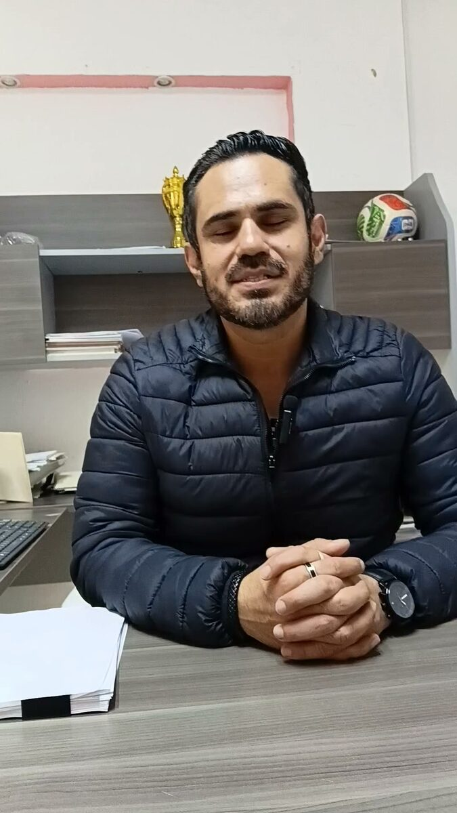
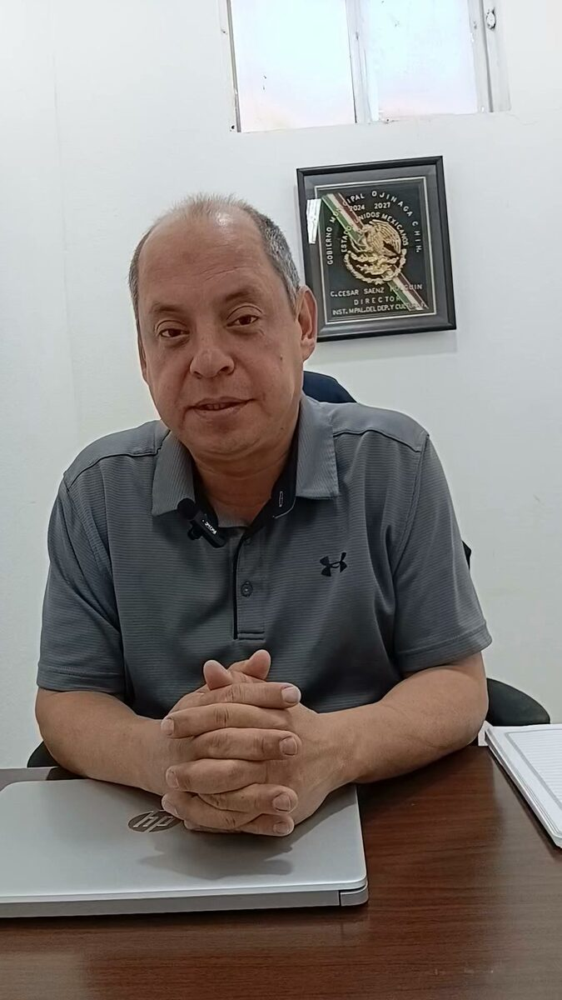
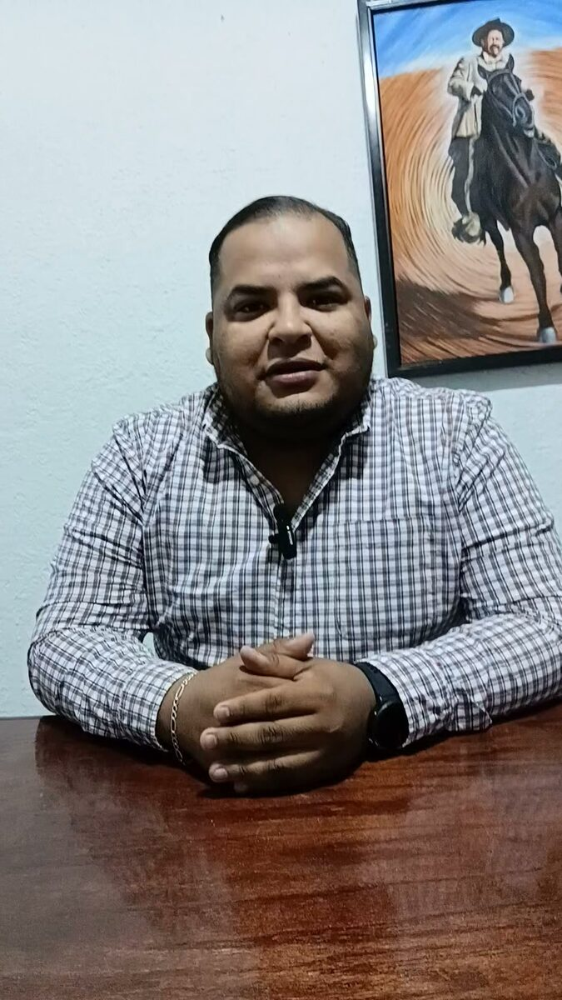
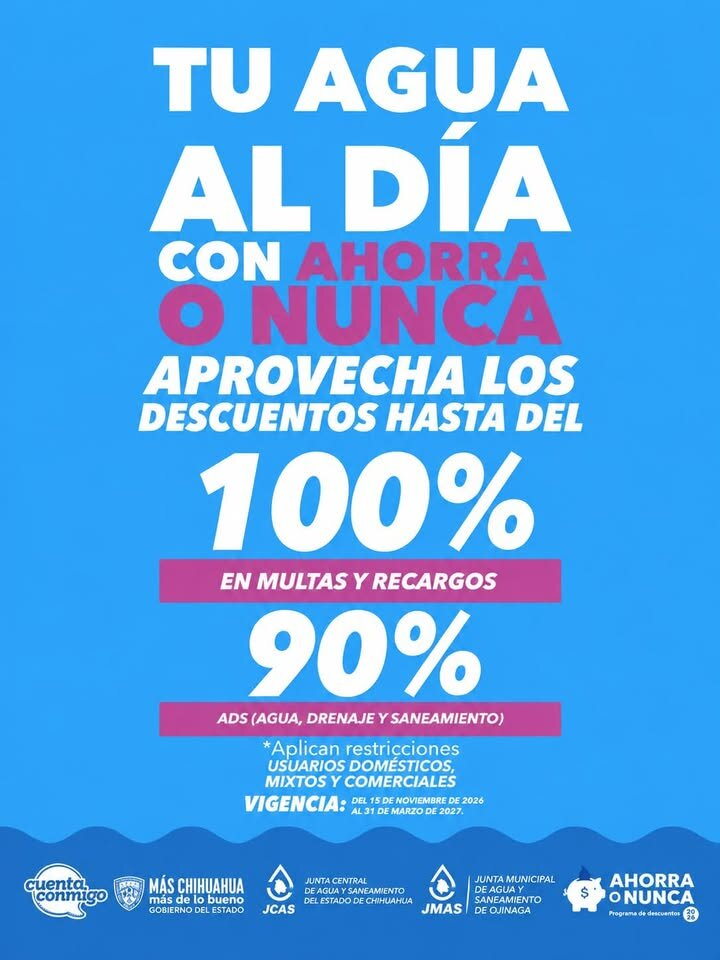
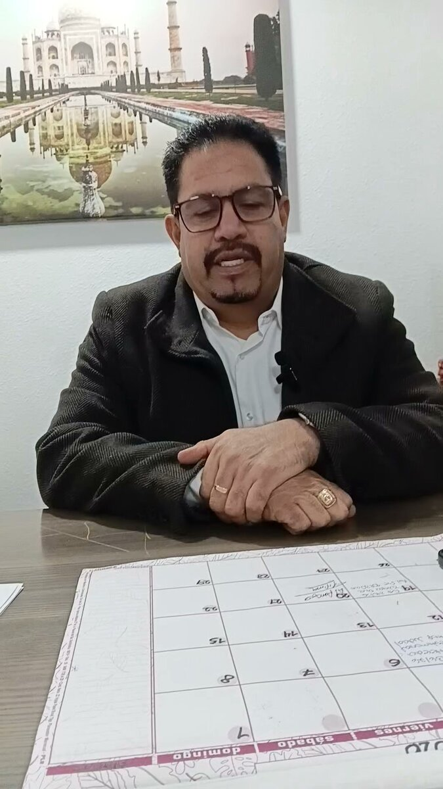
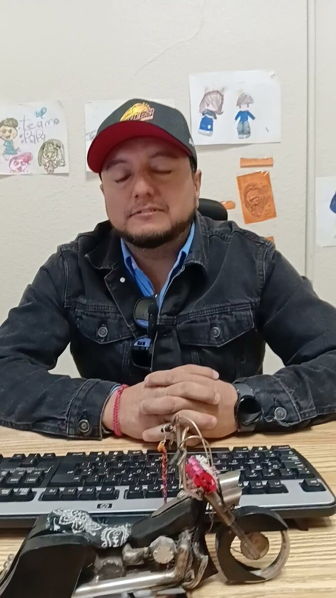

Policiaca
Durante recorridos de vigilancia en caminos rurales del corredor Aldama-Ojinaga, en el municipio de Coyame, elementos de la Fiscalía General del Estado, de la Secretaría de Seguridad Pública Estatal y de la Defensa localizaron dos camionetas incendiadas, restos humanos calcinados y manchas de sangre, de acuerdo con reportes periodísticos. Una de las líneas de investigación es un posible enfrentamiento entre grupos criminales. Hasta el momento no se ha confirmado el número de víctimas ni su identidad.
Nacional
Desde este viernes está vigente el decreto federal que obliga a gasolineras y casetas de cobro a aceptar pagos digitales: tarjeta, transferencia, código QR o telepeaje. El efectivo todavía no se rechaza. Hacienda tiene 15 días hábiles para publicar las reglas y los plazos de transición. El cambio no aplica a tiendas, restaurantes ni otros comercios.
Policiaca
La Fiscalía de Distrito Zona Centro anunció que este viernes se realizan cateos en Aldama y en la región de Ojinaga para localizar a tres hombres señalados de disparar contra agentes de la AEI el miércoles. El fiscal Daniel Terrazas Parada informó que el ataque se atribuye al grupo de Los Cabrera. Ya hay varios detenidos de esa organización, aunque no están ligados directamente a la agresión. El agente herido sigue fuera de peligro.
Local
El profesor Jorge Valenzuela Ramos, contralor interno del Municipio de Ojinaga, habla en entrevista de la aprobación de un código de ética para los empleados municipales. Mira el video completo en Facebook.

Local
El contador público Óscar Valenzuela Rodríguez, oficial mayor del Municipio de Ojinaga, habla en entrevista de que el servicio médico para los empleados municipales está asegurado a pesar del fin de año. Mira el video completo en Facebook.
Policiaca
Dos personas de entre 30 y 35 años murieron y tres más sufrieron intoxicación severa por monóxido de carbono en una habitación de un hotel del Centro de la ciudad de Chihuahua. Bomberos y paramédicos atendieron el reporte y la Fiscalía Zona Centro investiga. Con las heladas de este fin de semana, no use braseros ni calentones en cuartos cerrados y deje ventilación.

Local
César Sáenz Holguín, director del Instituto Municipal del Deporte, habla en entrevista de la preparación de los Soles de Ojinaga en basquetbol para el campeonato estatal 2027. Mira el video completo en Facebook.

Local
El licenciado Elam López Olivas, presidente del Comité Municipal del PRI en Ojinaga, habla en entrevista de que el PRI local apoyaría alianzas únicamente en candidaturas en el estado, no en lo local. Mira el video completo en Facebook.
Policiaca
Murió el adulto mayor que resultó gravemente herido el jueves, cuando una acumulación de gas hizo explotar su casa en el fraccionamiento Los Álamos, a la altura del kilómetro 17 de la carretera Chihuahua-Aldama. Según reportes periodísticos, falleció en un hospital de la capital. Protección Civil Estatal informó que otras tres viviendas resultaron dañadas y la Fiscalía investiga la causa. Ante el frío, se recomienda revisar tanques, mangueras y conexiones de gas.
Frontera
El diputado federal Joaquín Ruiz Olloqui, presidente de la Comisión de Asuntos Frontera Norte, encabezó una mesa con transportistas, maquiladoras, aduanas y autoridades de México y Estados Unidos. Formaron un frente binacional contra el posible cierre del Puente Córdova-Américas (Puente Libre) a la carga comercial. Advirtieron que el cierre subiría los costos, saturaría otros puentes y pondría en riesgo empleos ligados al comercio exterior.
Local
Desde el jueves 26 de noviembre llegaron más visitantes de Estados Unidos a los restaurantes de Ojinaga por el Día de Acción de Gracias. Según restauranteros locales, la ocupación llegaría hasta 70 por ciento este fin de semana y la derrama sería millonaria. Es un respiro para un sector que ha pasado meses difíciles y que espera una ligera recuperación hacia fin de año.
Estatal
El Servicio Meteorológico Nacional prevé que Chihuahua se sume este sábado 28 de noviembre a los estados con temperaturas de entre -5 y 0 grados y heladas, por el Frente Frío número 8 y una masa de aire ártico. Para la madrugada del domingo 29 se esperan heladas en las zonas serranas. Se recomienda abrigarse, proteger a niños y adultos mayores y no usar braseros en lugares cerrados.
Policiaca
Elementos de la Secretaría de Marina y de la Secretaría de Seguridad federal detuvieron a Fernando “N”, alias “Chapo Félix”, cerca del poblado de Cupia, en Tamazula, Durango. El Gabinete de Seguridad lo señala como presunto operador de la célula “Fuerzas Especiales Zambada”, vinculada a la facción de Los Mayos del Cártel de Sinaloa. Junto con él detuvieron a otras tres personas, entre ellas un menor de edad. Les aseguraron cuatro armas largas, ocho cargadores, 260 cartuchos y chalecos balísticos. La captura ocurre menos de una semana después de la detención de “El Chapo Isidro”.
Estatal
El coordinador estatal de la Defensa de la Transformación en Chihuahua, Cruz Pérez Cuéllar, pidió que se investiguen a fondo los señalamientos publicados por un diario estadounidense contra la gobernadora María Eugenia Campos. Dijo que son “acusaciones graves que deben esclarecerse sin privilegios ni encubrimientos”. También opinó que la gobernadora debería pedir licencia mientras duren las investigaciones, aunque aclaró que no le toca emitir juicios anticipados. Maru Campos ha rechazado las acusaciones.

Local
El programa “Ahorra o Nunca” estará vigente hasta el 31 de marzo de 2027. La Junta Municipal de Agua y Saneamiento (JMAS) de Ojinaga anunció la implementación del programa de descuentos “Ahorra o Nunca”, mediante el cual los usuarios podrán acceder a importantes beneficios para regularizar sus adeudos por servicios de agua potable, drenaje y saneamiento. De acuerdo con la información difundida, el programa contempla descuentos de hasta el 100% en multas y recargos, así como una reducción del 90% en adeudos por concepto de agua, drenaje y saneamiento (ADS). La campaña está dirigida a usuarios domésticos, mixtos y comerciales, aunque se precisa que aplican restricciones de acuerdo con las condiciones establecidas para cada tipo de usuario. El programa inició su vigencia el pasado 15 de noviembre de 2026 y concluirá el 31 de marzo de 2027. Con esta iniciativa, se busca brindar facilidades a los usuarios para ponerse al corriente en sus pagos y regularizar su situación ante el organismo operador. La JMAS invita a la ciudadanía a aprovechar estos beneficios antes de que concluya el periodo establecido.
Local
La profesora Silvia Fernández Leyva, directora del Instituto Ojinaguense de la Mujer, habla en entrevista del inicio de 16 días de concientización sobre la violencia a la mujer. Mira el video completo en Facebook.


Local
El licenciado Renzo Ávila Zepeda, director de la página de Transparencia del Municipio de Ojinaga, habla en entrevista de que a través de pintas de bardas harán concientización sobre el manejo de redes sociales. Mira el video completo en Facebook.
Nacional
La presidenta de México, Claudia Sheinbaum Pardo, informó que solicitó a la Fiscalía General de la República (FGR) investigar los señalamientos publicados por el diario estadounidense The New York Times, relacionados con un presunto financiamiento de organizaciones criminales a la campaña electoral de María Eugenia Campos Galván, actual gobernadora de Chihuahua. Durante su conferencia matutina de este jueves, la mandataria señaló que pidió a la Fiscalía revisar la información difundida por el periódico y esclarecer si existieron recursos de procedencia ilícita destinados a financiar la campaña electoral de 2021. “De hecho, ayer que vi la nota, pedí a la Fiscalía General de la República que investigue este caso”, expresó Sheinbaum al ser cuestionada sobre las posibles investigaciones contra el exfiscal estatal Guillermo Z.P. El reportaje, firmado por el periodista Steve Fisher y publicado el miércoles 25 de noviembre, señala que el exfuncionario presuntamente habría mantenido vínculos con grupos criminales que operaban como brazos armados del Cártel de Sinaloa en Chihuahua y habría reunido recursos ilícitos para favorecer la candidatura de Campos, entonces abanderada del Partido Acción Nacional (PAN). La investigación periodística refiere declaraciones de funcionarios mexicanos y menciona posibles transferencias de dinero de organizaciones criminales hacia la campaña electoral. Sheinbaum también abordó la presunta colaboración de funcionarios de Chihuahua con agencias estadounidenses, particularmente con la Agencia Central de Inteligencia (CIA). Según lo expuesto por la presidenta, Guillermo Z.P. habría participado en los vínculos entre la Fiscalía estatal y agentes de esa corporación para realizar actividades en territorio mexicano sin autorización de la Secretaría de Relaciones Exteriores ni del gabinete de seguridad. La solicitud de investigación busca que las autoridades federales esclarezcan los señalamientos. Hasta el momento, las acusaciones referidas en el reportaje deben considerarse presuntas y no constituyen por sí mismas una determinación judicial sobre responsabilidades.
Estatal
Chihuahua, Chih. – El proceso electoral 2026-2027 para la gubernatura de Chihuahua no contará con candidatos independientes, luego de que ningún ciudadano presentara su manifestación de intención para participar bajo esta modalidad. El Instituto Estatal Electoral (IEE) dará cuenta de esta situación durante su 28ª Sesión Extraordinaria del Consejo Estatal, programada para este jueves 26 de noviembre, a las 19:30 horas, en modalidad virtual. De acuerdo con el orden del día, el tercer punto corresponde al informe de la Secretaría Ejecutiva sobre la “no presentación de escritos de manifestación de intención para la acreditación de candidaturas independientes a la gubernatura en el proceso electoral local 2026-2027”. Con ello, no se registraron ciudadanos interesados en buscar la gubernatura de Chihuahua por la vía independiente, por lo que la contienda se perfila únicamente con aspirantes respaldados por partidos políticos, salvo alguna modificación posterior conforme a la legislación electoral. La sesión podrá seguirse en vivo a través del canal oficial del Instituto Estatal Electoral en YouTube.